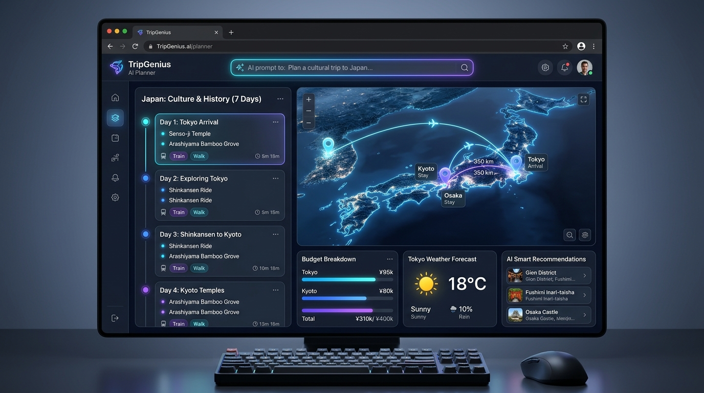

TripGenius AI Planner
AI Advisory PlatformFull-stack autonomous AI travel planner turning traveler preferences into personalized, day-by-day itineraries in approximately 20 seconds. Built with production-grade session persistence and secure auth.
- Sub-20s autonomous multi-day itinerary generation using fast LLM endpoints.
- User preference caching and itinerary history backed by PostgreSQL and Clerk.
- Responsive, modern user interface crafted with Next.js, TypeScript & Tailwind CSS.